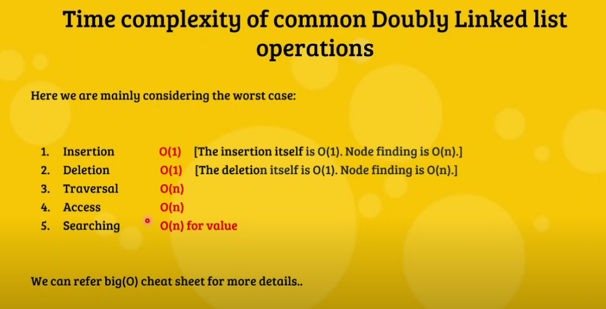

Doubly Linked List is better than singly LL as it may offer us to insert or pop from forward as well as backward direction
This will make it faster than singly LL
In a doubly LL we dont need to find prev pointers which makes deletion of nodes easy
Doubly ll needs more memory space to store extra pointers for prev node
